if conditionalelse conditionalelif conditionalfor" loopwhile" loopif conditional
The if conditional is a statement that evaluates a code block when the given condition is satisfied.
if CONDITION:
CODE-BLOCK
else conditional
When the CONDITION is not satisfied in if, then the code block written under else statement is evaluated,
if CONDITION:
CODE-BLOCK-1
else:
CODE-BLOCK-2
elif conditional
elif comes from (el)se (if)
The code under the elif statement is evaluated when the previous conditionals fail, and accepts a condition different from else.
if CONDITION-1:
CODE-BLOCK-1
elif CONDITION-2:
CODE-BLOCK-2
elif CONDITION-3:
CODE-BLOCK-3
.
.
.
if CONDITION-1:
CODE-BLOCK-1
elif CONDITION-2:
CODE-BLOCK-2
.
.
.
else:
CODE-BLOCK-N
We can compare two variables using the operators below,
| Name | Operator |
|---|---|
| is greater than | > |
| is less than | < |
| is greater than or equal | >= |
| is less than or equal | <= |
| is equal | == |
| is not equal | != |
Result of the comparative operators is a boolean value: True, False
Therefore, we can utilize them in if conditionals.
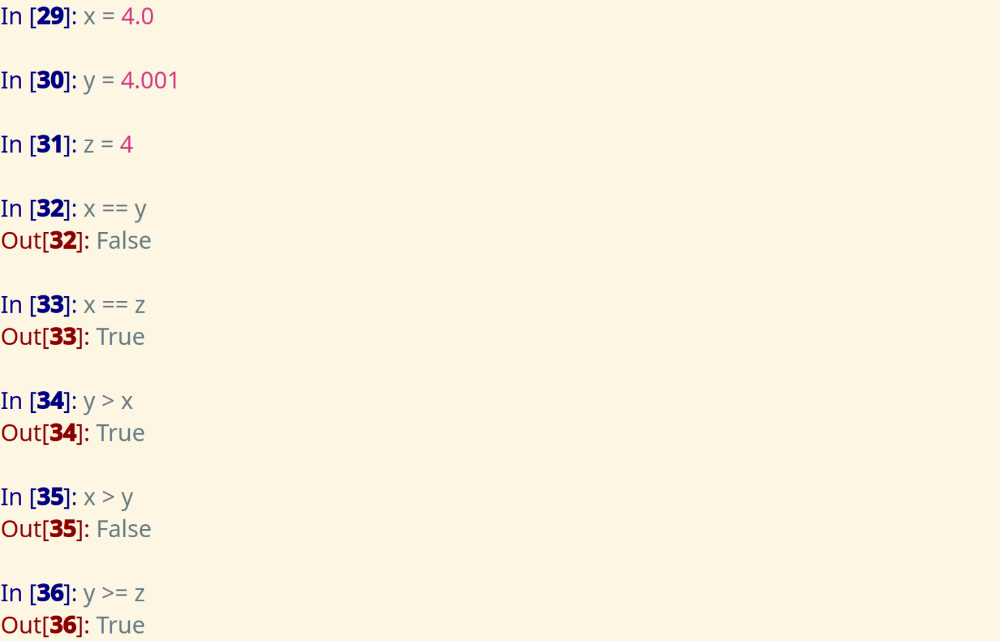
Logical operators are as follows
andornot
Result of the logical operators is a boolean value: True, False
Therefore, we can also utilize them in if conditionals.
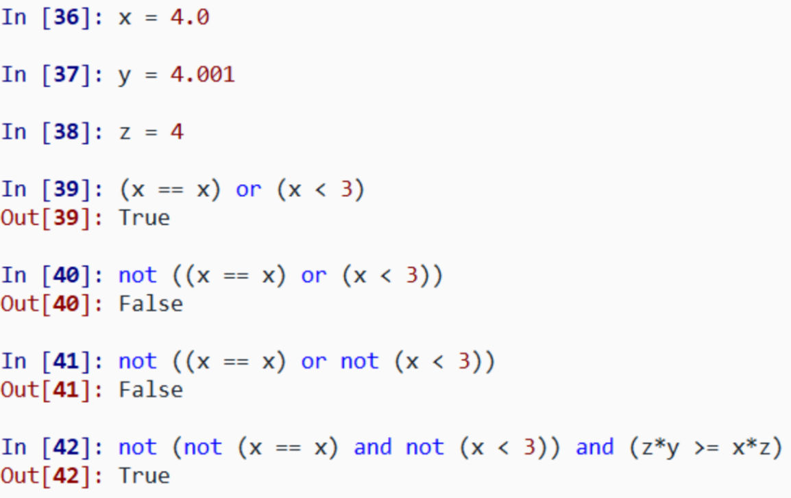
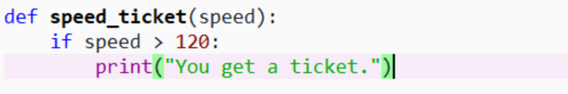
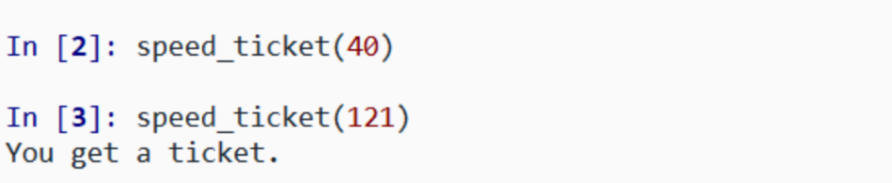
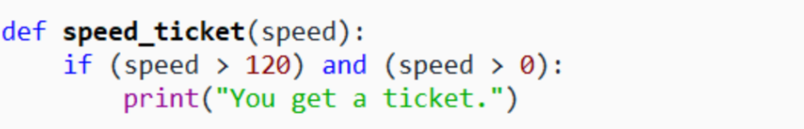
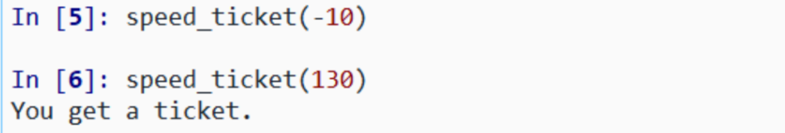
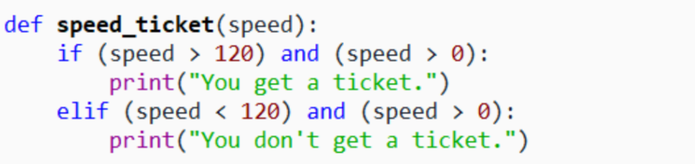
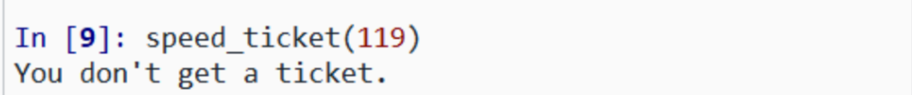
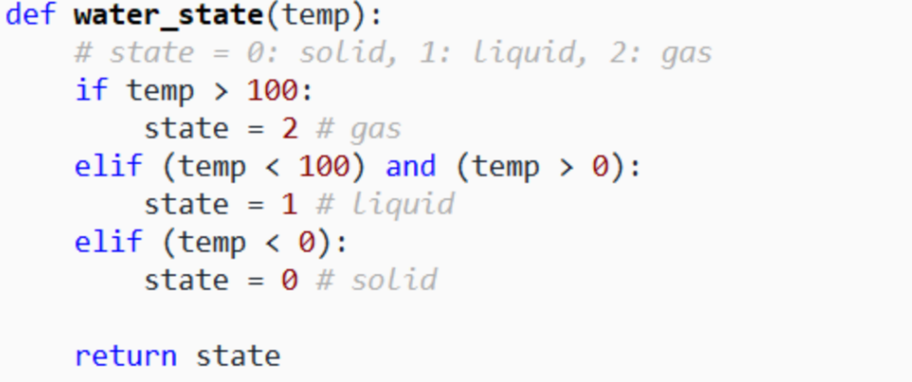
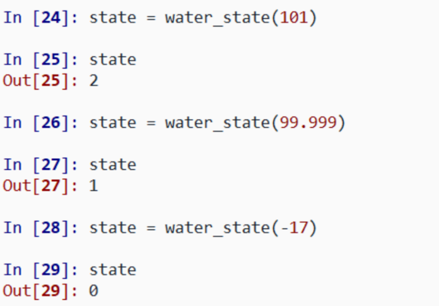
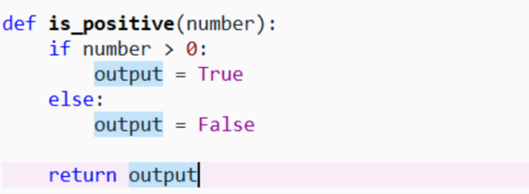
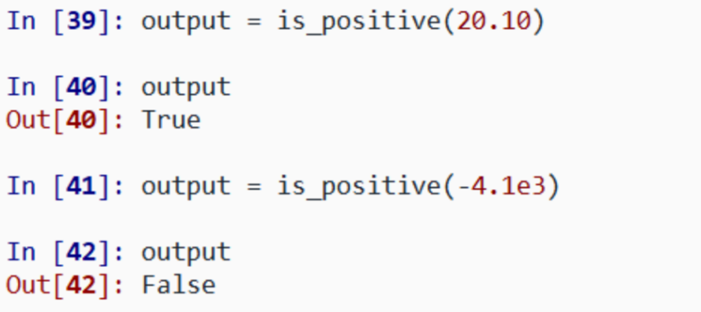
for" loop
A for loop repeats some code.
for index in sequence:
repeated code here
index: the iteration variable that respectively holds a value in the sequencesequence: an iterable object, e.g. a range, a list, a tuple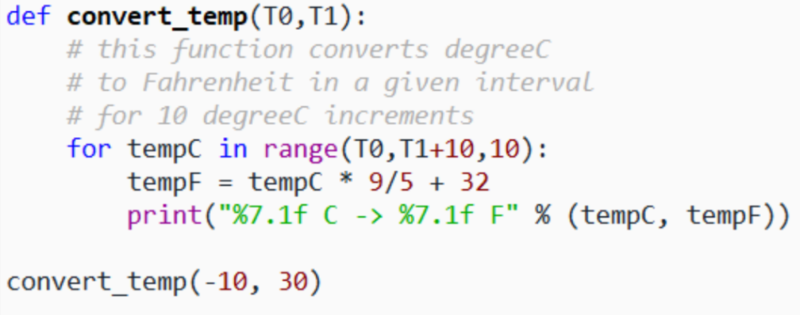
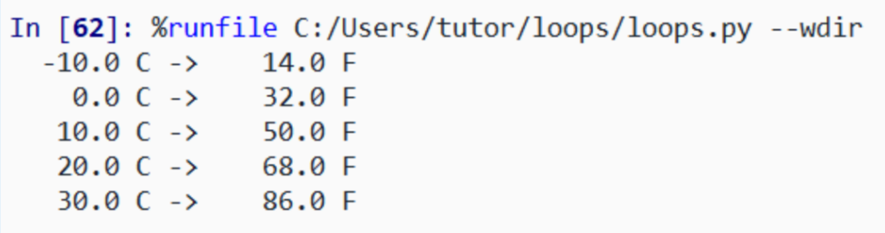
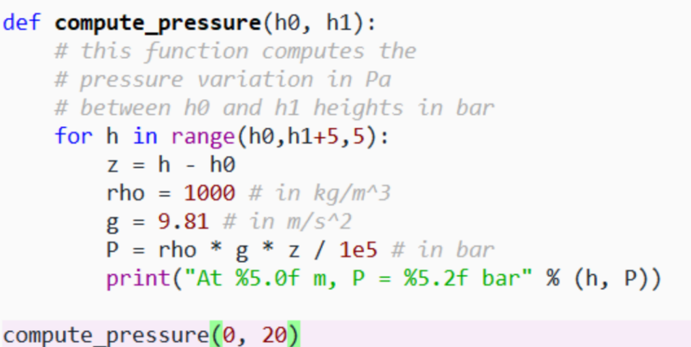
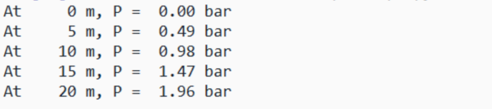
for index-1 in sequence-1:
repeated code here
for index-2 in sequence-2:
repeated code here
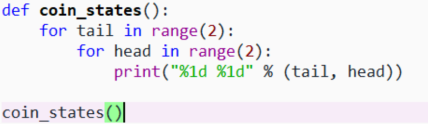
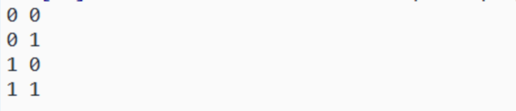
while" loop
A while loop repeats some code as long as the given condition is satisfied.
while condition:
repeated code here
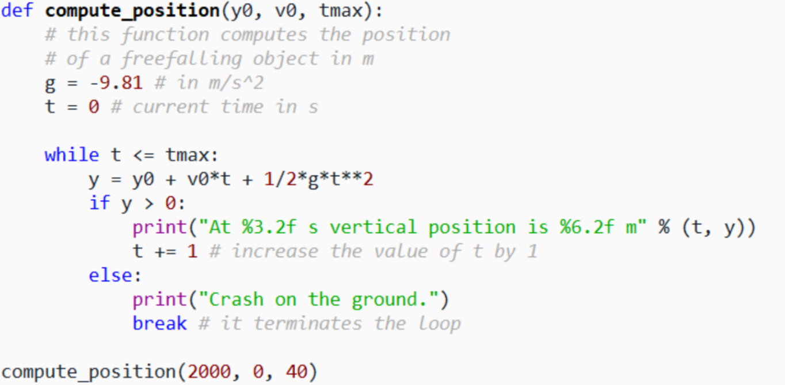
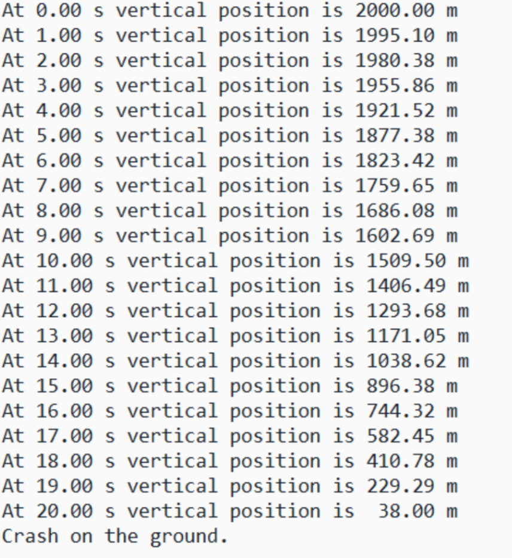
break used for terminating a "for" or a "while" loopcontinue used for jumping an iteration of a "for" or a "while" loop